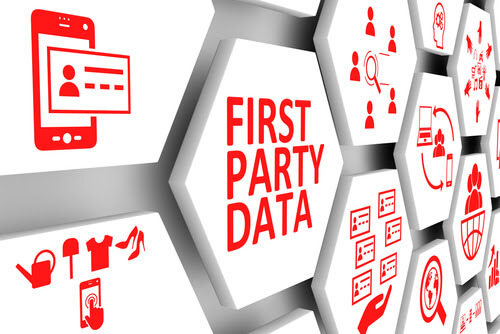

Data. It’s hard to imagine a more important word in the marketing lexicon. As the fuel behind the product campaigns, lead-generation efforts and content marketing strategies that are the cornerstones of today’s marketing programs, marketers have been challenged to build rich databases from which to conduct these efforts – a challenge that is about to get even greater.
Marketers have long relied on the use of third-party cookies to collect data from websites, apps and services in order to build wider audiences and expand outreach. But change is officially afoot. Driven by an increased focus on privacy concerns, Apple, Safari and now Google have responded, with 90% of browser traffic becoming un-trackable by third-party cookies in 2022. The much anticipated “death of the cookie” has finally arrived.
This has put an onus on the importance of owned, first-party data, making it essential for marketers to implement strategies to better collect, manage, and activate their own data. Marketers must be that much more vigilant in collecting first-party data both online via websites, apps, ads, social media and surveys, as well as offline through trade shows, conferences, and other events.
The good news is that there is a bonus to this approach. According to a survey from Google and the Boston Consulting Group, brands that use first-party data for key marketing functions achieved up to a 2.9X revenue uplift and a 1.5X increase in cost savings. This coincides with a McKinsey & Company research study, which indicates that companies using first-party data to model and target online audiences resembling their best-known consumers, can achieve a 40% improvement in return on ad spend.

So, what’s a marketer to do? The solutions are clear: it’s time to adjust the way marketers gather first-party data while ensuring messages are directed to, and seen by, appropriate audiences and stakeholders. Here are a few strategies.
Targeted advertising is another key strategy for acquiring first-party data, creating opportunities to drive users to company websites and apps where more information can be requested. Contextual advertising, where ads on the page directly relate to the content, is one example. Paid media on social networks such as LinkedIn and Instagram, is another solution. These options also typically offer targeting tools to help marketers find the right audience.
Investing in technologies to assign single persistent identities – a digital unique label for a person – is another potential first-party data strategy. A persistent identity not only maintains consumer privacy, with data collected when first forming a relationship, but it can then deliver more customer data points to help marketing teams accurately segment, target, and attribute marketing spend.
E-mail addresses are one example of a persistent identity label. By using them as the main identifier, marketers can utilize this persistent data point around which to construct a privacy-safe profile. In turn, marketers can conduct privacy compliant targeting coupled with increased engagement efforts to create new acquisition channels.
Performance marketers and brand strategists typically don’t see the world in the same way. Search engine and pay-per-click marketers think brand efforts are most effectively measured by clicks and conversions, whereas brand strategists don’t believe clicks tell the whole story.
The truth is that branding – both solid messaging and design – is critical to capturing the attention of customers and prospects. Businesses must first provide content that users actually want, and secondly, deliver it in an engaging way so that audiences are more likely to share information and personal data. As Moveable Ink, a company focused on customer engagement and accelerating marketing performance states, customers don't experience data, they experience content. And as McKinsey reports, companies that strike the right balance between performance-driven marketing and traditional brand building will “own the future."
Data has always been the foundation of marketing strategies, but first-party data is now the holy grail. Careful data collection is nothing new but it must be a focused component of marketing plans for 2022. Again, there is a positive to all this. Marketers can look to smart and strategic first-data party collection as an opportunity to accelerate and scale their database growth efforts and ultimately deliver increased value to their organizations. For marketers, that's powerful ROI.
This Insight was prepared by Maria Lilly and Jake Wengroff. Feel free to reach out with any questions or comments.